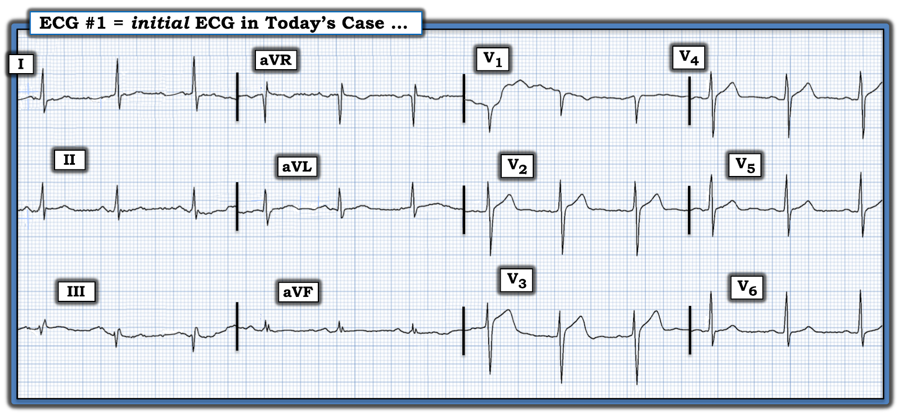
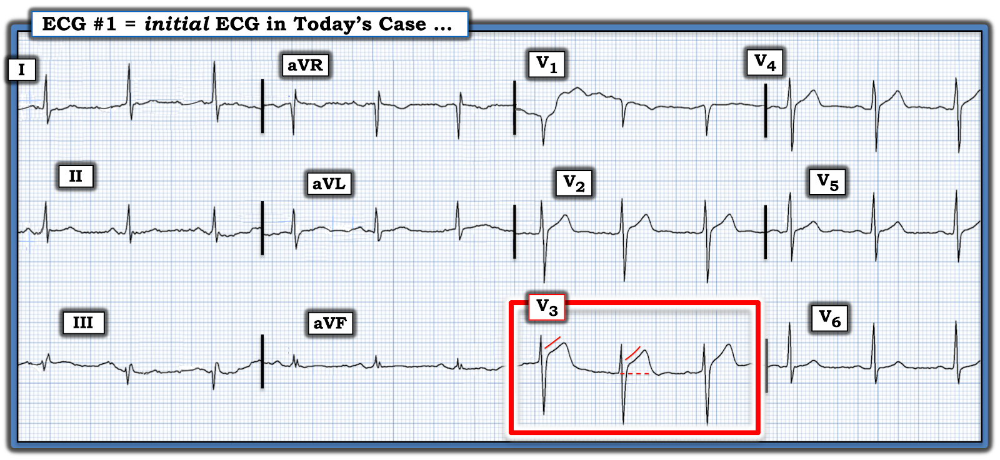
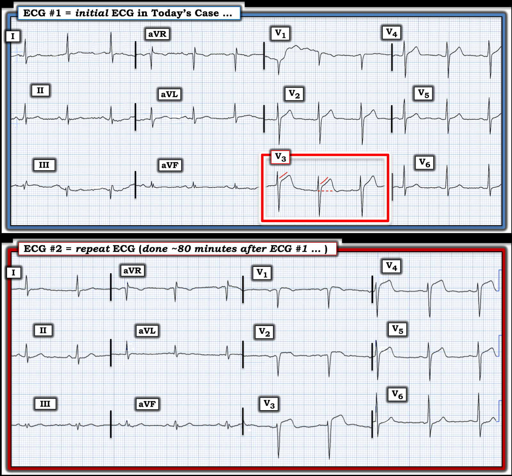
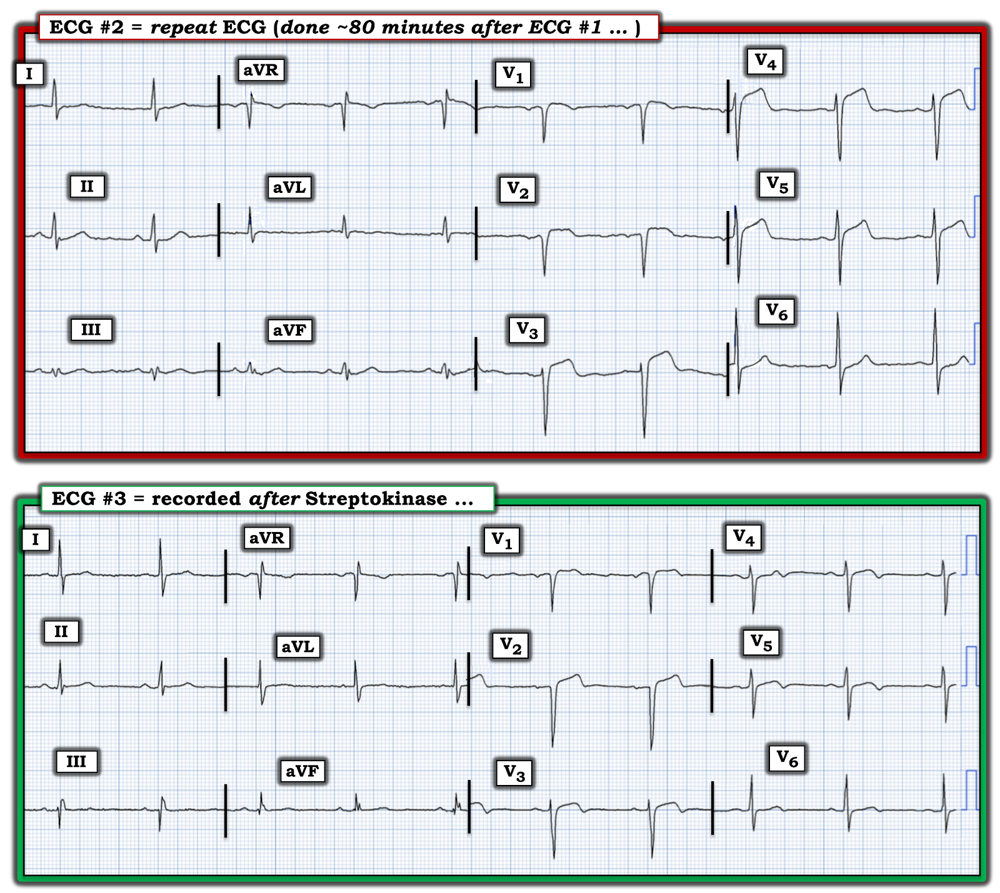

ECG Blog #418 — Chỉ một chuyển đạo nói lên tất cả ...
Điện tâm đồ ở Hình 1 được ghi từ một người đàn ông trước đây khỏe mạnh, ngoài 40 tuổi — đến khoa cấp cứu (ED) (Emergency Department) vì mới khởi phát CP (đau ngực — Chest Pain) làm ông tỉnh giấc.
- Điện tâm đồ #1 được ghi khoảng ~90 phút sau khi bệnh nhân bị đánh thức khỏi giấc ngủ. Ông vẫn còn đau ngực.
CÂU HỎI:
- Với bệnh sử này — BẠN sẽ đọc điện tâm đồ ở Hình 1 như thế nào?
- Liệu chỉ một chuyển đạo có “nói lên tất cả”?


SUY NGHĨ CỦA TÔI về điện tâm đồ ở Hình 1:
Những điểm quan trọng trong bệnh sử hôm nay là: i) Bệnh nhân là nam giới ngoài 40 tuổi, trước đây khỏe mạnh; — ii) Bệnh nhân bị đánh thức khỏi giấc ngủ bởi cơn đau ngực mới; — và, iii) Cơn đau ngực vẫn còn tiếp diễn 90 phút sau khi khởi phát, vào lúc ghi điện tâm đồ #1 tại khoa cấp cứu.
- Điện tâm đồ ở Hình 1 cho thấy nhịp xoang bình thường khoảng ~75 lần/phút — với các khoảng (PR-QRS-QTc) và trục bình thường — và không có lớn buồng tim.
Về Thay đổi Q-R-S-T:
- Sóng Q: Không có sóng Q. Có một sóng dương khởi đầu nhỏ-nhưng-có-mặt ( = sóng r) ở chuyển đạo III (tôi không tính là "sóng Q" các sóng âm khởi đầu thấy ở chuyển đạo aVR và V1 — vì thấy sóng Q ở các chuyển đạo này là bình thường).
- Tăng tiến sóng R: Có sóng R kích thước khá bắt đầu từ chuyển đạo V2 — dù vùng chuyển tiếp hơi muộn (sóng R chỉ trở nên cao hơn độ sâu sóng S ở khoảng giữa chuyển đạo V4 và V5).
Còn Thay đổi sóng ST-T thì sao?
Khi đánh giá thay đổi sóng ST-T trên điện tâm đồ ban đầu hôm nay — cần nhớ rằng bệnh nhân này trước đây khỏe mạnh — và — ông bị đánh thức khỏi giấc ngủ bởi cơn đau ngực vẫn còn 90 phút sau đó (tức là vào lúc ghi điện tâm đồ ban đầu này!).
- Vì vậy — Chúng ta cần xếp bệnh nhân này vào nhóm nguy cơ cao hơn có biến cố cấp. Điểm này nhấn mạnh rằng trách nhiệm chứng minh thuộc về chúng ta, những người làm y tế, phải chứng minh bệnh nhân này không có biến cố cấp, chứ không phải ngược lại!
Chúng ta Cần Nhớ Những Điều Sau:
- Ngay cả khi có biến cố cấp — điện tâm đồ ban đầu không nhất thiết cho thấy thay đổi rõ rệt — và/hoặc — thay đổi trên điện tâm đồ có thể có, nhưng kín đáo (và đôi khi chỉ nhận ra được khi so với một điện tâm đồ nền trước đó của bệnh nhân — hoặc khi so sánh thay đổi trên các điện tâm đồ liên tiếp theo thời gian).
- ĐIỂM THEN CHỐT (PEARL) #1: Ngay cả khi đang có nhồi máu cơ tim cấp diện rộng — troponin độ nhạy cao ban đầu đôi khi vẫn có thể bình thường.
- ĐIỂM THEN CHỐT (PEARL) #2: Điều quan trọng là ghi nhận và đối chiếu sự hiện diện cũng như mức độ nặng tương đối của triệu chứng với từng điện tâm đồ được ghi liên tiếp. Lý do là diễn tiến của một OMI cấp ( = nhồi máu cơ tim (MI) cấp do tắc (Occlusion) mạch vành cấp) — không phải lúc nào cũng dự đoán được. Thay vào đó, ngay cả trước điều trị — động mạch "thủ phạm" có thể tự thông trở lại — điều này thường có thể nhận ra nhờ đau ngực giảm đi đi kèm với thay đổi điện tâm đồ cải thiện.
- Việc động mạch "thủ phạm" tự thông trở lại có thể dẫn tới "giả bình thường hóa" các thay đổi điện tâm đồ (NẾU điện tâm đồ được ghi vào "khoảng giữa" giai đoạn ST chênh lên cấp — và giai đoạn tái tưới máu mạch vành về sau, khi ST chênh lên chuyển thành ST chênh xuống và sóng T đảo ngược).
- MẤU CHỐT Lâm sàng: Giai đoạn "giả bình thường hóa" này vẫn bắt buộc thông tim sớm kèm PCI, vì cái gì tự thông trở lại — cũng có thể dễ dàng tắc lại vào bất kỳ thời điểm nào nếu không được PCI ngăn ngừa.
========================
THỬ THÁCH:
Ghi nhớ những lưu ý trên — Hãy XEM LẠI điện tâm đồ ban đầu hôm nay ở Hình 1:
- Chuyển đạo duy nhất nào trong điện tâm đồ #1 nói lên tất cả?
TRẢ LỜI (ở bên dưới):
Tôi làm nổi bật câu trả lời cho "Câu hỏi thử thách" ở trên trong Hình 2:


========================
Về Thay đổi sóng ST-T ở Hình 2:
Đúng như tiêu đề bài ECG Blog hôm nay — một chuyển đạo MẤU CHỐT "nói lên tất cả".
- Thay đổi sóng ST-T ở các chuyển đạo chi cho thấy sóng ST-T dẹt không đặc hiệu — nhưng không có gì trông giống cấp tính.
- Tôi đã làm nổi bật trong hình chữ nhật ĐỎ ở Hình 2 chuyển đạo duy nhất ( = chuyển đạo V3) mà ở một bệnh nhân có đau ngực dữ dội mới xuất hiện thì rõ ràng là bất thường. Dù đoạn ST hơi chênh lên, dốc lên thoai thoải là thường gặp và bình thường ở chuyển đạo V2,V3 — ở chuyển đạo này trên điện tâm đồ ban đầu có đoạn ST thẳng đuỗn rõ ràng — và mức ST chênh lên (so với đường chấm ĐỎ ở chuyển đạo V3 này) là quá mức. Đây là sóng ST-T tối cấp ở chuyển đạo V3 cho đến khi chứng minh được điều ngược lại!
ĐIỂM THEN CHỐT (PEARL) #3: Xin nhấn mạnh rằng chuyển đạo V3 là chuyển đạo MẤU CHỐT trên điện tâm đồ ban đầu hôm nay — không có nó tôi đã không chẩn đoán OMI cấp. Nhưng vì chúng ta biết (vì những lý do nêu trên) rằng ở một bệnh nhân đau ngực mới, sóng ST-T ở chuyển đạo V3 là tối cấp — tôi cũng đọc 2 chuyển đạo lân cận ở Hình 2 ( = chuyển đạo V2 và V4) là bất thường và phù hợp với OMI LAD cấp cho đến khi chứng minh được điều ngược lại:
- Chuyển đạo V2 — Mức ST chênh lên ở chuyển đạo V2 không nhất thiết là quá mức, vì ST hơi chênh lên thường gặp một cách bình thường ở các chuyển đạo trước V2,V3. Nhưng trong bối cảnh chuyển đạo V3 chắc chắn có sóng ST-T tối cấp — tôi nghĩ phần đầu đoạn ST ở chuyển đạo V2 “thẳng đuỗn” hơn một chút so với tôi thường kỳ vọng (ít nhất ở phức bộ thứ 1 của chuyển đạo này).
- Chuyển đạo V4 — Dù không nhất thiết bất thường nếu xét như một dấu hiệu đơn lẻ — tôi nghĩ mức ST chênh lên ở chuyển đạo V4 lân cận hơi nhiều hơn mức thường thấy ở chuyển đạo này. Và, ít nhất ở phức bộ giữa của chuyển đạo này — đoạn ST có vẻ thẳng đuỗn hơn-mức-kỳ-vọng một chút.
- XIN NHẤN MẠNH: Nếu không có chuyển đạo V3 — tôi đã không đọc chuyển đạo V2 và V4 là nhất thiết bất thường. Điều này càng đúng khi xét: i) Tăng tiến sóng R tốt đến bất ngờ mà ta thấy ở điện tâm đồ #1 — với sóng R đã cao 7-8 mm ngay từ chuyển đạo V2 (trong khi với OMI LAD cấp thường có “mất sóng R” ở các chuyển đạo trước); và, ii) Hoàn toàn không có bất thường ở các chuyển đạo ngực còn lại ( = chuyển đạo V1,V5,V6). Chính chuyển đạo V3 "nói lên tất cả"!
ĐIỂM THEN CHỐT (PEARL) #4: Như đã nói ở trên — điện tâm đồ ban đầu không phải lúc nào cũng có giá trị chẩn đoán. MẤU CHỐT là hiểu rằng ở hầu hết bệnh nhân — quá trình tắc mạch vành đang tiến triển cấp là động — đôi khi cho thấy thay đổi rõ rệt chỉ trong khoảng thời gian ngắn 5-10 phút (Xem ECG Blog 115 về một ca có thay đổi sóng ST-T rõ rệt như vậy xảy ra chỉ trong 8 phút!).
- Thông điệp “Cần Nhớ” từ ca hôm nay rất rõ ràng — NẾU bạn có chút nào không chắc chắn liệu bệnh nhân đau ngực của mình có hay không đang tiến triển OMI cấp — Hãy ghi lại điện tâm đồ sớm và thường xuyên — cho đến khi bạn có thể tự tin trả lời câu hỏi này!
CA BỆNH hôm nay TIẾP DIỄN:
Nếu có bất kỳ băn khoăn nào về việc bệnh nhân hôm nay có đang tiến triển OMI cấp hay không — lẽ ra điện tâm đồ ban đầu phải được ghi lại trong vòng 15-20 phút.
- Điện tâm đồ chỉ được ghi lại sau 80 phút. Để dễ so sánh ở Hình 3 — tôi đã đặt 2 điện tâm đồ đầu tiên này cạnh nhau. BẠN thấy gì?


So sánh giữa điện tâm đồ #1 và điện tâm đồ #2:
Cách TỐT NHẤT để so sánh các điện tâm đồ liên tiếp — là đặt chúng cạnh nhau, như tôi đã làm ở Hình 3.
- Vì lo ngại về chuyển đạo V3 ở điện tâm đồ #1 — tôi bắt đầu đánh giá điện tâm đồ #2 bằng cách xem chuyển đạo này, và các chuyển đạo lân cận của nó.
- So với điện tâm đồ #1 — giờ đây ở chuyển đạo V3 của điện tâm đồ #2 đoạn khởi đầu ST thẳng đuỗn không thể nhầm lẫn, với biên độ sóng T giảm.
- Chuyển đạo V4 ở điện tâm đồ #2 — giờ đây chênh lên không thể nhầm lẫn (với đoạn khởi đầu ST thẳng đuỗn).
- Mỗi chuyển đạo ngực còn lại cũng cho thấy khác biệt. Giờ có ST chênh lên kín-đáo-nhưng-thật-sự ở chuyển đạo V1, V2 và V5 — và có một ít ST chênh xuống ở chuyển đạo V6 mà trước đó không có.
- Thay đổi ở chuyển đạo chi trên điện tâm đồ #2 kín đáo — nhưng trong bối cảnh các thay đổi ở chuyển đạo ngực nêu trên, tôi tin rằng biên độ sóng T hơi tăng ở các chuyển đạo dưới và sóng ST-T dẹt ở chuyển đạo aVL là có thật.
- ĐIỂM THEN CHỐT (PEARL) #5: BẠN có Nhận ra sự mất biên độ sóng R ở điện tâm đồ #2? Giờ có dạng QS ở chuyển đạo V2, với biên độ sóng R giảm rõ ở chuyển đạo V2 đến V5 so với điện tâm đồ #1.
ĐIỀU CỐT LÕI:
Nếu còn nghi ngờ về chẩn đoán từ điện tâm đồ #1 — thì điện tâm đồ ghi lại ở Hình 3 giờ đã rõ ràng chẩn đoán OMI LAD cấp vì: i) Thay đổi sóng ST-T động thấy ở hầu như tất cả chuyển đạo so với bản ghi ban đầu — bao gồm ST chênh lên tăng dần ở chuyển đạo V2 đến V5; và, ii) Mất biên độ sóng R ở các chuyển đạo ngực này.
- BÀI HỌC Quan trọng: Với bệnh sử đau ngực dữ dội mới khởi phát — OMI LAD cấp có thể được chẩn đoán (hoặc ít nhất nghi ngờ mạnh) từ điện tâm đồ ban đầu của ca hôm nay. Nhưng ngay cả khi còn không chắc chắn về điện tâm đồ #1 — chẩn đoán xác định lẽ ra đã có thể được đưa ra sớm hơn nhiều bằng cách ghi lại bản ghi ban đầu này trong vòng 10-15 phút (thay vì chờ 80 phút).
KẾT LUẬN CA BỆNH:
Chẩn đoán OMI LAD cấp được đưa ra khi có điện tâm đồ ghi lại ở Hình 3. Do không có sẵn thông tim — Streptokinase đã được sử dụng.
- Điện tâm đồ #3 được ghi sau khi truyền xong Streptokinase — đi kèm với cải thiện lâm sàng. BẠN thấy gì?


Về điện tâm đồ sau Streptokinase ở Hình 3:
Truyền Streptokinase đã có hiệu quả!
- Ngoài ST còn chênh lên nhẹ ở chuyển đạo V1,V2 — ST chênh lên ở các chuyển đạo ngực khác về cơ bản đã hết!
- Dù đã mất biên độ sóng R so với điện tâm đồ ban đầu — không có mất thêm biên độ sóng R kể từ điện tâm đồ #2.
- Giờ có đảo ngược phần cuối sóng T — bắt đầu từ chuyển đạo V2, và kéo dài đến chuyển đạo V6. Đi kèm với cải thiện lâm sàng của bệnh nhân — điện tâm đồ #3 giờ cho thấy sóng T tái tưới máu phù hợp với truyền tiêu sợi huyết có hiệu quả.
==================================
Lời cảm ơn: Xin cảm ơn Kianseng Ng (từ Malaysia) về ca bệnh và bản ghi này.
==================================
Các Bài ECG Blog Liên quan đến Ca hôm nay:
- ECG Blog #205 — Ôn lại Cách tiếp cận hệ thống của tôi để đọc điện tâm đồ 12 chuyển đạo.
- ECG Blog #193 — Ôn lại những điều cơ bản để dự đoán động mạch "thủ phạm" (cũng như lý do vì sao thuật ngữ "STEMI" — nên được thay bằng "OMI" = nhồi máu cơ tim do tắc (Occlusion-based MI)).
- Nhận diện sóng T tối cấp — các nhóm chuyển đạo — một OMI (dù không phải STEMI) — Xem Bình luận của tôi ở cuối trang trong bài ngày 8 tháng 11 năm 2020 trên Dr. Smith's ECG Blog.
- ECG Blog #294 — Ôn lại cách nhận biết LIỆU động mạch "thủ phạm" đã tái tưới máu hay chưa.
- ECG Blog #230 — Ôn lại cách so sánh các điện tâm đồ liên tiếp.
- ECG Blog #115 — Cho thấy thay đổi ST-T rõ rệt có thể xảy ra chỉ trong khoảng 8 phút.
- ECG Blog #268 — Một ví dụ về sóng T tái tưới máu.
- ECG Blog #400 — Ôn lại khái niệm thay đổi sóng ST-T "động".
- ECG Blog #337 — Một ca "NSTEMI" thực ra là OMI đang diễn tiến với thời gian không rõ (biểu hiện bằng sóng T tái tưới máu ở các chuyển đạo dưới).